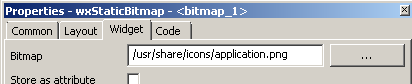

Bitmaps¶
- For some widgets you need to specify one or more bitmaps. There are several options how to do this:
- from a bitmap file
- from a named variable: statement var:
- empty bitmap: statement empty:
- from wxArtProvider: statement art:
- from literal code: statement code:
From Bitmap File / Path¶
Specify the absolute or relative path to the bitmap file.
For an absolute path, you may use the file dialog by clicking the button “…”.
You may drag a file to the field. If the file is located below the project file’s directory, the relative path will be entered. For the absolute path just hold the Alt or Ctrl key.
Sometimes, depending on your runtime environment, you may have to customize the loading of the bitmap files. See below for an example.
| Example | /usr/share/icons/application.png
 |
| Created code C++ |
wxBitmap("/usr/share/icons/application.png", wxBITMAP_TYPE_ANY)
|
From named variable: Statement var¶
| Syntax | var:<variable name>
|
| Example | var:my_bitmap_path
|
| Created code C++ |
wxBitmap(my_bitmap_path, wxBITMAP_TYPE_ANY)
|
Empty Bitmap: Statement empty¶
Creates an empty bitmap of the specified size (min. 1,1)
| Syntax | empty:<width>,<height>
|
| Example | empty:32,32
|
| Created code C++ |
wx.EmptyBitmap(32, 32)
|
Python |
wxBitmap(32, 32)
|
From wxArtProvider: Statement art¶
Create a bitmap using wxArtProvider.
See https://docs.wxpython.org/wx.ArtProvider.html for usage of wxArtProvider.
| Syntax | art:<ArtID>,<ArtClient>
or: art:<ArtID>,<ArtClient>,<width>,<height>
|
| Example | art:wxART_GO_UP,wxART_OTHER,32,32
|
| Created code Perl |
Wx::ArtProvider::GetBitmap(wxART_GO_UP, wxART_OTHER, Wx::Size->new(32, 32))
|
From Code: Statement code¶
This just inserts the given code.
| Syntax | code:<code chunk to return a wxBitmap>
|
| Example | code:if (x == 0) get_bitmap1() else get_bitmap2();
|
| Created code C++ |
if (x == 0) get_bitmap1() else get_bitmap2();
|
Customizing Bitmap loading¶
If at runtime the image files are at a non-standard location, you need to customize the loading of image files such that the files will be found.
For example, if you use PyInstaller to create a single-file executable, then the bitmaps need to be loaded from a temporary directory sys._MEIPASS.
This example code would replace wx.Bitmap with an implementation that is aware of this remapping:
import wx
import sys, os
# taken from stackoverflow re accessing data files within pyinstaller bundle.
def resource_path(relative_path):
"Get absolute path to resource, works for dev and for PyInstaller."
base_path = getattr(sys, '_MEIPASS', os.path.dirname(os.path.abspath(__file__)))
return os.path.join(base_path, relative_path)
# get a reference to original wx.Bitmap (just in case)
wxBitmap = wx.Bitmap
# customised wx.Bitmap, which obtains the location of the bitmap
# using the `resource_path` function above.
class MyBitmap(wxBitmap):
def __init__(self, *args, **kwargs):
try:
kwargs['name'] = resource_path(kwargs['name'])
except KeyError:
args = list(args)
args[0] = resource_path(args[0])
# call original wx.Bitmap
wxBitmap.__init__(self, *args, **kwargs)
# Remap wx.Bitmap to our customised version.
wx.Bitmap = MyBitmap
(Courtesy of Brendan Simon)